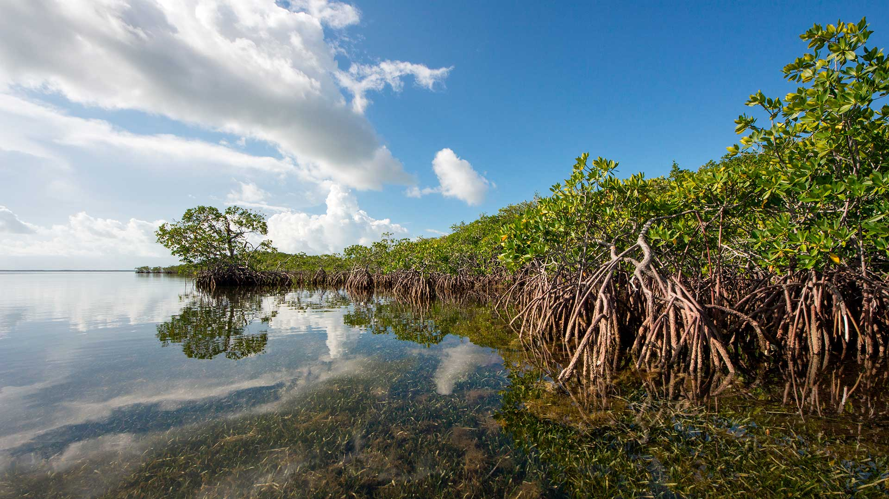
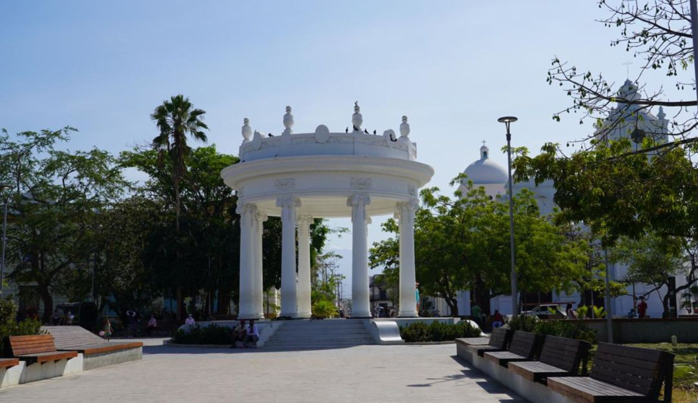
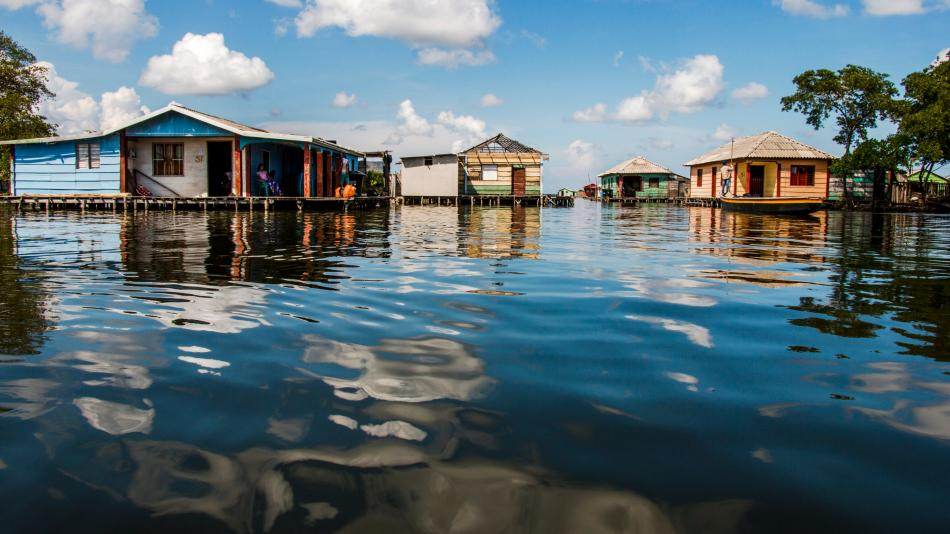

Explora la Belleza de Ciénaga
Descubre nuestras experiencias de ecoturismo en Ciénaga, Magdalena. Ofrecemos una variedad de tours que te permiten disfrutar de la naturaleza, la cultura y la gastronomía de la región.

Paquete Mito y Realidad
proximamente

Capital del realismo mágico
Descubre los lugares que inspiraron el realismo mágico en un recorrido por Ciénaga y Aracataca..

Paquete Cienaga Grande
proximamente.